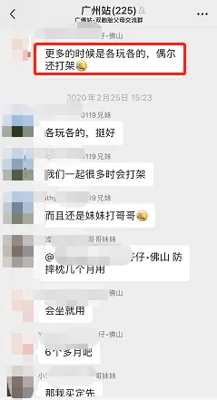
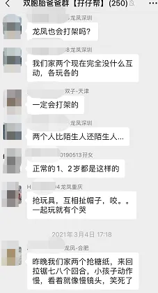
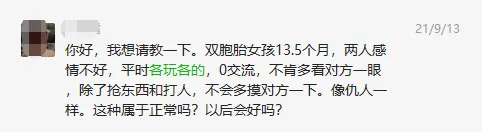
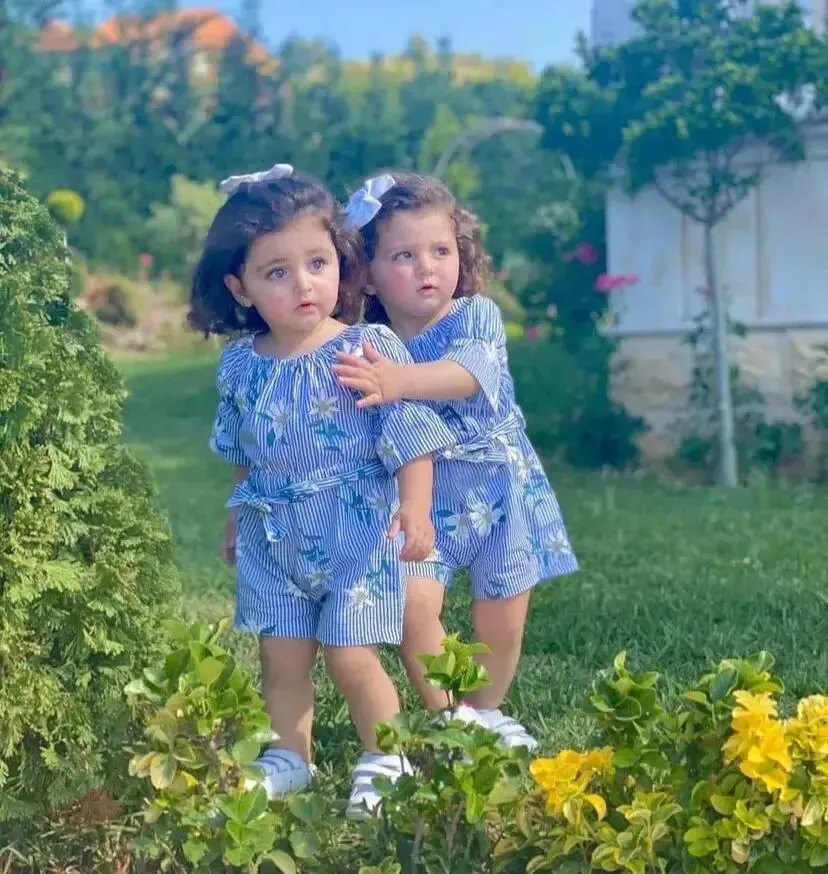
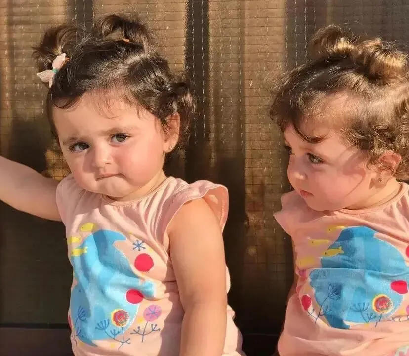

孖仔帮
公众号ID：twinsbang
关注
文|圆圈妈
网图|侵删
这篇是求助贴。
关于双胞胎之间的互动，问的人比较多，社群里也对这个问题讨论的多，所以借这个案例分享下我的看法。
Q：
你好，我想请教一下。双胞胎女孩13.5个月，两人感情不好，平时各玩各的，0交流，不肯多看对方一眼，除了抢东西和打人，不会多摸对方一下。像仇人一样。这种属于正常吗？以后会好吗？
A：
如果孩子们3岁以上，那需要引起重视，家长要采取措施加以引导，但这对姐妹花才13.5个月，我想说，这是再正常不过了，会好的！
因为，一岁半前，孩子的能力和猩猩差不多，不要抱有太高的期望。
有人曾经做过这样一个实验：把一个刚刚出生的小孩子和一只刚刚出生的小猩猩放在相同的环境下抚养。在一岁半之前，小猩猩和小孩子所表现出来的能力基本上是一样的；但从一岁半开始，小孩子的发育和表现便逐渐超过了小猩猩。
这个实验说明，孩子要到一岁半之后，才会开始表现出区别于动物的“人”所特有的特性。
当然，从一出生起，孩子就已经是个完整的人了，只是他还需要些时间来完成自己从一个类似于小动物的东西到“人”的过渡。
这对小姐妹还不到一岁半，说话能力还很弱，甚至可能只会喊咿咿呀呀或爸爸妈妈，更何况是连我们成人都未必能掌控好的社交能力。
这相当于，逼迫还不会走路的小孩去参加百米跨栏，还要赢得冠军那种。
而且，这个年龄段的孩子还有一个特点：只关注自己，不在意别人，不喜欢与别人亲近、交流。
他们大多数时间会专心致志地享受着自己一个人的世界，而不屑与外界交流，当这个小家伙和其他小朋友一起时，他往往不太注意周围的玩伴。
所以，有时候，家长看到两姐妹像仇人一样，不肯多看对方一眼，其实都是孩子们的本色出演。
这个年龄段的孩子只有在他心情好或需要帮助时，才会想起你的存在，才会主动和你交流。
他与周围人的关系只建立在一个基础上：那就是别人能满足或者帮助他实现自己的需求。
否则，大多数情况下都是：本宝宝现在心情不好，让我一个人呆着，别烦我，你们跪安吧！
真的，你千万别指望他懂礼貌，对他来说，迁就别人，实在是很困难的一件事。
再说到双胞胎的打架，这个老大难的问题。
孩子们现在13.5个月，已经开始萌发独立自主的意识，当他看中别人手里的东西时，他就会很不客气地抢过来，对自己想要的东西都会固执地想要拿到手，但语言表达还跟不上，于是只能靠最原始的技能，如抢，打，咬，拉、拽、敲、拖、推....
两姐妹在一起玩耍时，冲突是必然的。
这个时候孩子们间的打架，跟我们成人说的打架斗殴，完全是两码事，不要混为一谈，也不要太过于担心，经常这样打架抢东西会影响姐妹间的感情。
须知道，姐妹情是塑料做的还是钢铁做的跟小时候打不打架没有半毛钱关系，即便是有，也不是这种尚无定论的因果关系。
那跟谁有关系呢？关键是父母。
双胞胎孩子们和和气气相亲相爱，是父母最大的功劳。
此时，家长要做的就是，把她们分开到各自的角落里待着，用眼神示意，并温柔坚定地说不可以，但不必训斥。
因为你说再多也是白说，一岁半的孩子能听懂一些事，但能做的事很少，他身体的各个方面都没有发展成熟。
所以，不能拿他和大一些的孩子做比较，更不能要求他做一些超出他能力范围的事情。
综合而言，我认为，以上双胞胎姐妹俩的问题其实不大，倒是家长的主观意识成分比较大，究根结底还是太焦虑了，对孩子们的某些行为过分解读了。
比如提到两人感情不好，
我滴天，才13.5个月的娃，哪里会有感情，我的意思是，还那么小，她们身上区别于动物的“人”所特有的特性还没有出现，她们对感情这一说还没有概念。
说她们0交流，也很矛盾，因为两人抢东西打人也是这个年龄段的孩子交流的一种方式。
圆圈两兄弟也是1岁多开始各种抢和打，抢不到了，打不过了，就咬，咬不动了就哭...不单只两兄弟互相咬，还咬其他人，反正我们全家人不管男女老少都集体伤痕累累，牙印斑斑...
家长如果想看到双胞胎相亲相爱的画面，其实很简单，组织一些互动性好，参与度高，趣味性强的小游戏，以此吸引她们的注意力，增加两人之间的交流互动，比如抛球，玩拼图，堆积木（大颗粒），捏黏土，过家家...
当然，家长得在边上引导，但不要干涉太多，也不用教她们怎么玩，总之就看着，随便她们怎么捣鼓就行，反正你想要的画面已经有了，你已经乐在其中了，其他的都不是重点。
港真，这个时候的双胞胎小孩最招人喜欢了。
现在的我总是很怀念小时候的圆圈，想念他们那天真无邪人畜无害的眼神还有那滑稽可爱的小动作，而不是像现在这样，说了不听，训了没用，打了更嗨，总是一副嬉皮笑脸，毫不在意的样子，时刻挑战着我的三观，突破着我的极限...
真让人脑壳疼，心儿颤，肝火旺，肺儿炸...
所以，好好地珍惜这段时光吧！
同时也给孩子们多一点耐心和包容吧，不要为了满足大人们那些不切实际的想法，而强迫孩子们小小年纪，就要千方百计地做自己力量还达不到的事情。
孩子们的成长之路其实真的，挺难的。
以上一点拙见，仅供参考，如有异议，欢迎留言区拍砖。
参考文献：《你的1岁孩子》作者: 路易斯.埃姆斯,弗兰西斯.伊尔克,卡罗尔.哈柏
今日互动话题
#你家的双胞胎互动多吗？#
评论区聊一聊呗！
微信公众号：孖仔帮
ID : twinsbang
专注双胞胎孕育，养育，教育经验分享
扫码关注我们
点一下你会更好看耶





